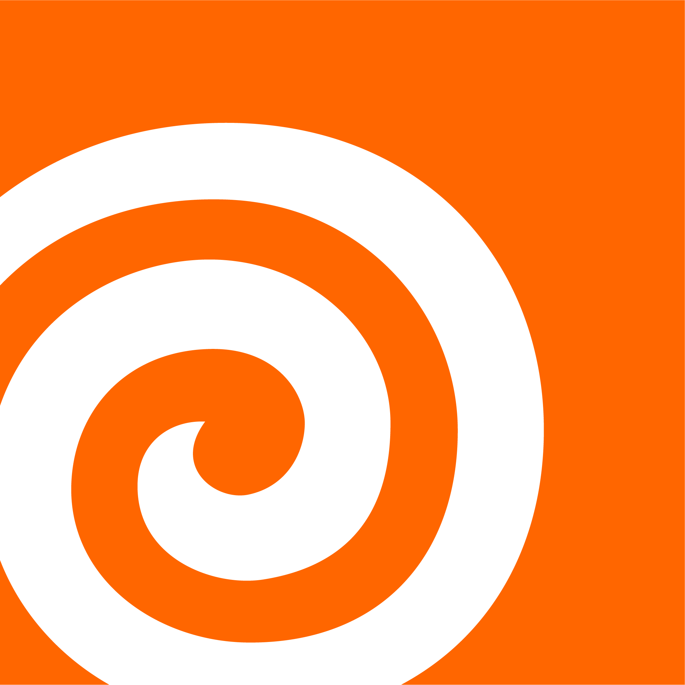
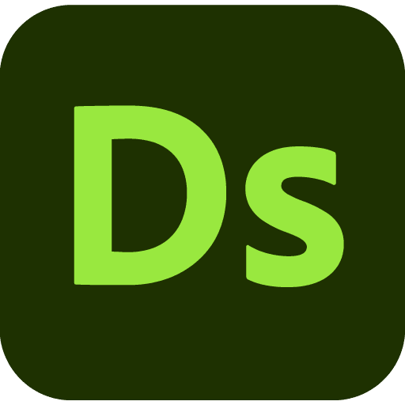
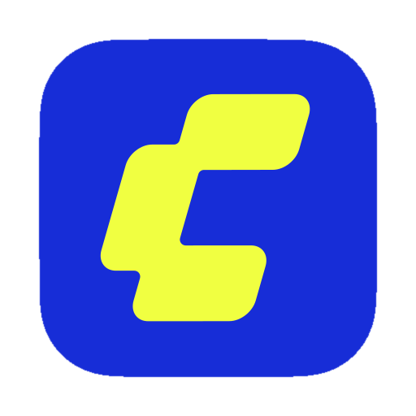
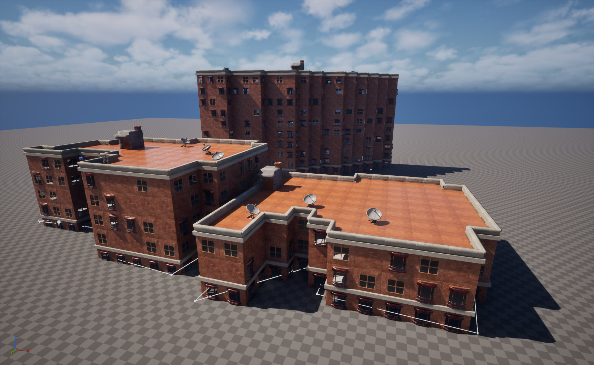

01 / ABOUT ME
个人简介
本人目前就读于美国University of Utah的GAMES专业，GPA3.926（前5%），预计2027年暑假毕业。性格开朗，沟通能力强，具备较强的学习能力。熟练掌握游戏3D环境艺术和美术向技术美术的核心岗位技能。



Xiaolan Ji's Personal Portfolio
环境艺术 | 技术美术
xiaolanj_0309@163.com
PORTFOLIO ARCHIVE
这是我的个人作品集首页。个人作品部分点击可以查看作品细节，视频在作品底部。时间线部分在施工中，团队经验劳烦查看简历文档，左上角菜单书签最下方可以快速跳转。
01 / ABOUT ME
本人目前就读于美国University of Utah的GAMES专业，GPA3.926（前5%），预计2027年暑假毕业。性格开朗，沟通能力强，具备较强的学习能力。熟练掌握游戏3D环境艺术和美术向技术美术的核心岗位技能。



02 / PERSONAL PROJECTS



03 / MY TIMELINE
数字资产制作基本操作，虚幻引擎基本操作，JAVA、Python 面向对象编程基础，数据结构
数字资产制作基础
次世代 PBR 资产制作，虚幻引擎基本操作
设计，美学与 UE 进阶
团队项目 Chrono Ruin 担任程序和技术美术
团队项目 Litter Box 担任技术美术和环境美术
学校团队项目 Game Clown 担任主程序
熟练化 PBR 资产制作流程，能使用 PT 绘制复杂材质，系统学习虚幻材质蓝图
Houdini 和 Substance Designer
完美世界实习项目，作品集《寻找幸存者》
作品集 On the Beach，学校团队项目 L'Oréal Product-Aware Routine Builder Chatbot
百尺竿头...
04 / CONTACT ME
PROJECT INTRO
项目介绍
项目详细介绍
资产搭建全流程